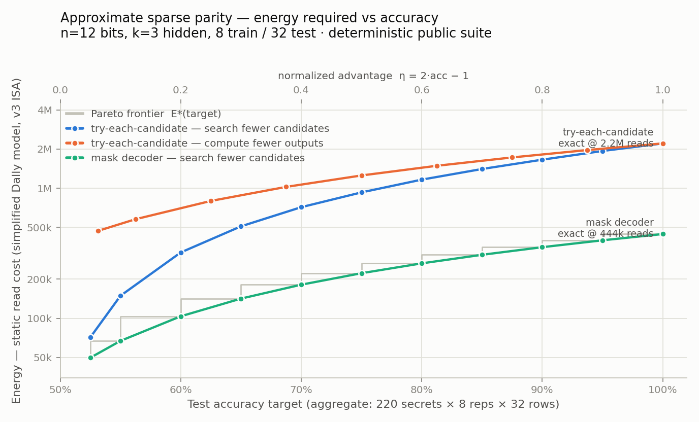
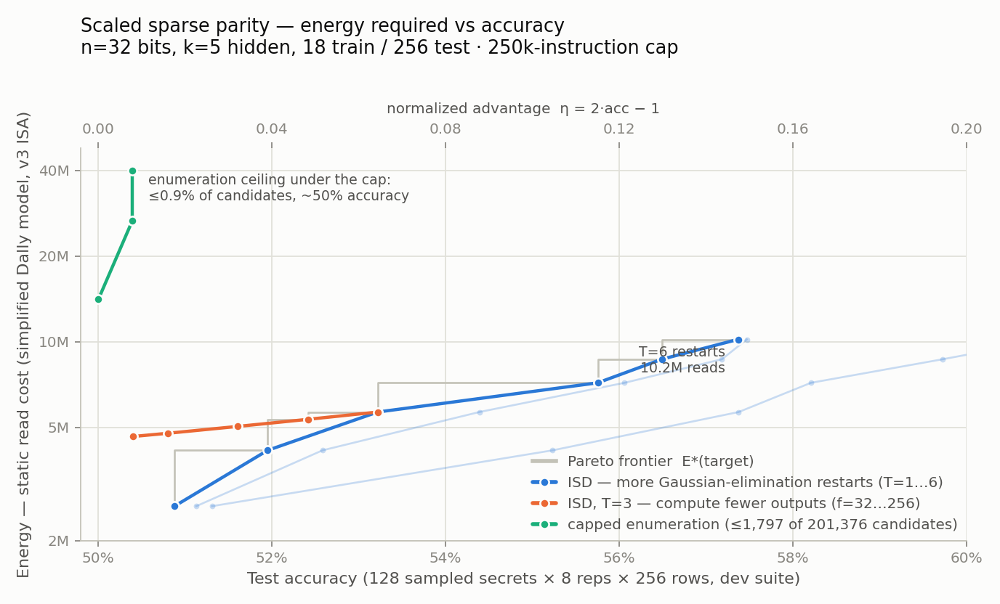
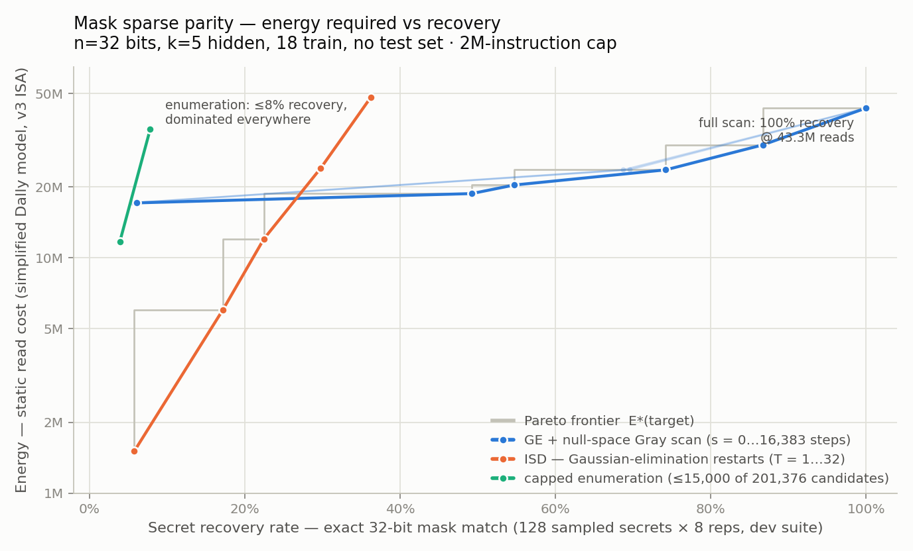

Sparse parity: an accuracy–energy benchmark
Three graded tiers of the sutro-problems sparse-parity task — what the curves mean, the algorithms behind them, and the honest list of pitfalls. August 26, 2026.
The problem
Each instance hides a secret set of k of n bit positions. A row's label is the XOR (parity) of the bits at those positions. A submission is a straight-line program in the v3 instruction set of the simplified Dally model (8-bit values, no loops, no branches, no data-dependent addressing). In one invocation it receives mtrain labeled rows and mtest unlabeled rows, and must output all mtest predicted labels.
Energy is the program's static read cost: every operand read of address a costs ⌈√a⌉ (a Manhattan-distance proxy — far memory is expensive). Scoring is joint: one program, one energy number covering training-decode and test-prediction together, so there is no phase interface to game. Accuracy is aggregated over the whole suite (never thresholded per instance) and reported as the normalized advantage η = 2·accuracy − 1 (0 = coin-flipping, 1 = perfect), which is meaningful because test rows come in bitwise-complement pairs: with odd k a row and its complement carry opposite labels, so any constant guess scores exactly 50%.
Training sets are rejection-sampled until exactly one candidate secret explains all the labels ("unique identifiability"). That keeps 100% accuracy always attainable — the benchmark measures approximation quality, not dataset ambiguity — and it gives verified decoders a powerful guarantee used throughout: any weight-k solution consistent with the training rows is the secret.
| n | k | mtrain | mtest | candidates C(n,k) | instruction cap | |
|---|---|---|---|---|---|---|
| Tier 1 — approximate | 12 | 3 | 8 | 32 | 220 | 100,000 |
| Tier 2 — scaled joint (superseded) | 32 | 5 | 18 | 256 | 201,376 | 250,000 |
| Tier 3 — mask recovery (current) | 32 | 5 | 18 | — | 201,376 | 2,000,000 |
How to read the curves: the Pareto frontier
Every submitted circuit is one point: its measured accuracy and its energy. An algorithm family with a knob (how many candidates to check, how many restarts to run, how many outputs to compute) traces a curve of such points. The Pareto frontier is the lower envelope over everything submitted:
E*(A) = min { energy(P) : P is a submitted program with accuracy(P) ≥ A }Read it as a cost function: pick a target accuracy on the x-axis, go up to the gray step line — that is the least energy any known program needs to hit that target. It only steps up as the target rises. A point above the frontier is dominated (something cheaper achieves the same accuracy); a new algorithm "wins" by pushing some stretch of the frontier down or to the right. The benchmark's object of study is the shape of this envelope — in particular where it bends when brute force stops being affordable.
Tier 1 (n=12): the approximate benchmark

Algorithm: try-each-candidate (blue)
Decode: for each candidate triple T among the first q (of
220, in fixed order), compare the parity of columns T against all 8 training
labels, producing an indicator ind_T. By unique identifiability,
exactly one candidate matches — so decoding succeeds iff the secret is among
the q examined. Predict: each test row is labeled
OR over T of (ind_T AND parity_T(x)), so prediction re-scans all
q candidates per output — the source of this family's 5× energy
handicap. Advantage is exactly η = q/220.
Algorithm: mask decoder (green — owns the frontier at this size)
Same decode phase, but the q one-hot indicators are compressed
once into 12 mask bits, mask_c = OR of ind_T over candidates T
containing column c — the mask is the recovered secret. Each
prediction is then XOR_c (mask_c AND x_c): 12 ANDs and 11 XORs
per output, independent of q. Same accuracy formula, ~5× less
energy (exact recovery at 444,389 reads instead of 2,209,461).
The scalable families at this size (orange, yellow)
The same two polynomial algorithms that own the n=32 tiers are plotted here for comparison. ISD restarts (orange) track the mask decoder closely up to ~75% and then bend away (diminishing returns as rotated information sets start overlapping — only 12 distinct subsets exist at n=12). The GE + null-space Gray scan (yellow) is a nearly horizontal line: it pays a fixed ~477k-read Gaussian-elimination-plus-basis cost, after which sweeping all 2⁴ = 16 null-space solutions is almost free — 65% → 99% accuracy for ~1% more energy. At n=12 both sit above the enumeration frontier: with only 220 candidates, brute force is still the best buy. The n=32 graphs below show exactly this ordering inverting — the benchmark's central phenomenon.
| Energy (reads) | Accuracy | η | Ops | Score time | Cheapest strategy |
|---|---|---|---|---|---|
| 137 | 50.0% | 0.00 | 32 | 1 ms | constant guess |
| 122,523 | 62.5% | 0.25 | 3,067 | 9 ms | mask decoder, q=55 |
| 222,255 | 75.0% | 0.50 | 5,377 | 19 ms | mask decoder, q=110 |
| 397,838 | 95.0% | 0.90 | 9,073 | 26 ms | mask decoder, q=198 |
| 444,389 | 100.0% | 1.00 | 9,997 | 28 ms | mask decoder, q=220 |
| 2,209,461 | 100.0% | 1.00 | 36,709 | 101 ms | try-each-candidate, q=220 |
| 482,045 | 99.3% | 0.99 | 13,928 | 38 ms | GE + Gray scan, s=15 |
Score time = one circuit against the whole 1,760-instance dev suite (220 secrets × 8 reps × 32 rows = 56,320 labels), after the 0.09 s suite build. See Run times.
Tier 2 (n=32, joint): where enumeration dies
Status: superseded by Tier 3 below (which drops the test set and raises the cap); kept because its measurements motivate both changes.
At n=32, k=5 the candidate count jumps to C(32,5) = 201,376 and the linear system's null space has 2n−m = 214 solutions. Under the tier's 250,000-instruction cap both brute-force families are priced out:
- Candidate enumeration needs ≈130 instructions per candidate — ~26M total. A capped circuit checks at most 1,797 candidates (≤0.9%), giving η ≤ 0.009 at 14–40M reads: pinned to the floor and expensive (top-left of the graph).
- Solution-space (null-space) enumeration — Gray-coding through all 214 solutions of the underdetermined system and keeping the minimum-weight one — measures ~65 instructions per step as a real in-ISA circuit, ≈1.1M total: also dead. (This family is easy to underestimate; see pitfall 4.)
What remains is the polynomial family — this instance of the problem is syndrome decoding of a random linear code, so the natural scalable algorithm is information-set decoding.
Algorithm: ISD restarts (Prange) — the reference circuit
One restart: pick an "information set" of m=18 of the 32 columns; copy
those training columns plus the labels into an 18×19 augmented matrix; run
branchless GF(2) Gaussian elimination (pivoting is done with
cmp/select chains since the ISA has no branches);
read out the zero-free-variable solution; accept it only if it has
weight exactly k and reproduces every training label. Unique
identifiability turns that acceptance test into a proof: an accepted solution
is the secret. T restarts use rotating column subsets and OR their accepted
solutions into a 32-bit mask; prediction is the O(n) mask predictor. Each
restart succeeds when the secret happens to lie inside its information set —
probability ∏i<5(18−i)/(32−i) ≈ 4.25%, confirmed at
4.22% pooled over fresh suites (single deterministic suites scatter 2.2–5.6%;
see pitfall 7 and the spatial-model
analysis). The
circuit is all-or-nothing by construction: on every suite instance its output
is either exactly correct or exactly all-zeros — never garbage.

| T restarts | Ops | Energy (reads) | Accuracy | η | Score time |
|---|---|---|---|---|---|
| 1 | 52,926 | 2,641,072 | 50.9% | 0.018 | 0.14 s |
| 3 | 125,902 | 5,657,464 | 53.2% | 0.064 | 0.32 s |
| 6 | 235,366 | 10,181,932 | 57.4% | 0.147 | 0.57 s |
Score time = one circuit against the 1,024-instance dev suite (128 secrets × 8 reps × 256 rows = 262,144 labels), after the 1.8 s suite build. The whole tier tops out at η = 0.147: under the 250k cap nothing reaches the upper 85% of the curve, which is why Tier 3 raises it.
Everything above η ≈ 0.15 is currently open: candidates include packed GE (byte-packing historically bought 5–15× in this repo, which buys more restarts under the cap), partial null-space scans grafted onto a restart, and Stern-style collision decoding re-expressed without hashing. The mtest = 256 choice came from the measured energy split of this reference circuit — prediction costs ≈4,400 reads per output vs ≈1.5M per decode restart, so the test side carries 11–43% of total energy across the frontier: both knobs stay relevant, neither dominates.
Tier 3 (n=32, mask recovery): the current tier
Two changes relative to Tier 2, both motivated by its measurements. The test set is dropped. Sparse parity makes it provably redundant: a circuit that has not identified the secret predicts test rows at exactly 50% (any strict-subset parity is uncorrelated with the true one), so joint test accuracy was always (1 + recovery)/2 — and every measured Tier-2 circuit was empirically all-or-nothing. The submission now outputs the secret itself: 32 mask cells, scored by exact match (well-defined because training sets are uniquely identifiable). The accuracy axis becomes the secret recovery rate; the chance floor drops from 50% to 1/C(n,k) ≈ 5·10⁻⁶; complement pairing is no longer needed (so even k would be legal); and there is nowhere to offload work — a fixed standard evaluator can label rows from a recovered mask at ~4,400 reads/row, a constant that cannot change rankings. The cap rises to 2,000,000 so that a known family reaches 100% recovery.
Algorithm: GE + null-space Gray scan — reaches 100%
Full-width branchless GF(2) elimination, then extraction of the null-space basis (dimension n − m = 14 w.h.p.), then a Gray-code walk through the solution space w = s₀ ⊕ Σ aⱼ·bⱼ, capturing any weight-k visitor — every visited w solves the training system, so identifiability makes a weight-k visitor the secret. The step knob s sweeps the curve: s=0 is min-support GE (6.1% recovery), s=2¹⁴−1 visits the whole space (measured 100.0% at 1.77M instructions / 43.3M reads). The curve is concave because the secret's Gray coefficients are low-weight (≈2.2 of 14 ones on average), so the walk tends to visit it early — s=4,095 already recovers 74%.

| Energy (reads) | Recovery | Ops | Score time | Cheapest strategy |
|---|---|---|---|---|
| 1,505,862 | 5.8% | 36,542 | 0.09 s | ISD, T=1 |
| 12,042,480 | 22.5% | 291,958 | 0.70 s | ISD, T=8 |
| 23,676,539 | 74.2% | 593,160 | 1.46 s | scan, s=4,095 |
| 43,325,468 | 100.0% | 1,772,808 | 4.38 s | scan, s=16,383 ★ |
Score time = one circuit against the 1,024-instance dev suite, after the 1.7 s suite build. A full adjudication run of the most expensive circuit — fresh hidden 2,048-instance suite included — measures 8.2 s.
Cap margins at 2M: the full scan uses 89% of the cap; packed candidate enumeration needs ≈4.2M ops (2.1× over — the thin margin to watch), naive ≈26M (13×). Under the cap, enumeration tops out at ≤8% recovery for 35M reads: dominated everywhere, even with the raised budget. Headroom for submissions: byte-packing the scan state (~65 ops/step instead of 96) and packing GE both shift the frontier left several-fold.
Why do these circuits need 10⁵–10⁶ instructions?
Because the instruction set is straight-line — the count is not algorithmic work, it is algorithmic work × unrolling × branchless overhead:
- No loops. Every iteration is emitted as its own instructions. The looped form of Gaussian elimination is ~10 lines; unrolled over 32 columns × 18 rows × 33 matrix entries it is ~10⁵ instructions. The Gray scan is literally the same ~96-instruction step pasted 16,383 times.
- No branches. Every data-dependent decision becomes arithmetic
over all possibilities via
cmp/select: "pick the first unused row with a 1" costs 7 instructions per candidate row instead of one branch; "capture w if its weight is k" costs a full 32-cell conditional copy every step. - No indirect addressing. Reading M[pivot_row, c] where pivot_row is data takes an 18-way cmp/select chain (~36 instructions per read); the null-space basis extraction is ~38k instructions mostly for this reason. This same restriction is what makes hash-based meet-in-the-middle attacks inexpressible — the benchmark's brute-force arithmetic depends on it.
Measured across the reference circuits: straight-line instruction count ≈ (RAM-model bit-operation count) × 1.2–18, where the factor tracks how much data-dependent control and addressing the algorithm needs — 1.2× for fully oblivious enumeration, 2.7× for the Gray-scan step, 5.6× for select-chain pivoting, 17.8× for dynamic matrix reads (the O(live-cells)-per-access multiplexer bound, hit exactly). Full derivations and literature anchors in the spatial-model analysis.
Pitfalls in the scoring and benchmark design
- The public suite is minable — never adjudicate on it.
An adversarial review demonstrated a working exploit on the n=12 tier: a
submission that decodes only 50 candidates and falls back to per-output input
bits mined from the published suite passed the η≥0.25 scorer at lower cost
than the honest entry, while its true advantage was 0.223. Deterministic
public suites are for development; rankings near a threshold must be confirmed
on a held-out suite key or fresh hidden randomness
(
evaluate_scaled(ir, suite_key=None)draws from SystemRandom). - Sampled secrets must be fresh or hidden. The scaled tier samples 128–256 of the 201,376 secrets. The dev suite's sample is derivable from its public key, and a ~33,000-instruction circuit (13% of the cap; the 256-output prediction phase alone has a ≥8,192-instruction floor) that enumerates just those 128 secrets scores a perfect η = 1.0 on the dev suite — Pareto-dominating the honest frontier — while measuring exactly 0.0 on a fresh key. This is the sharpest cheating vector introduced by scaling; it is why adjudication uses fresh hidden secrets.
- Output truncation must be priced, not banned — via the decode/predict energy balance. "Compute f of the outputs, guess the rest" is a legitimate strategy; complement pairing makes its accuracy exactly linear in f. The danger is imbalance: if prediction dominates energy the whole leaderboard becomes output-truncation variants (an early n=8 target suffered exactly this); if decode dominates, the output knob is irrelevant. Set mtest ≈ D/P of the reference decoder and re-derive it per tier.
- Candidate enumeration is not the only brute force. The solution space of the linear system has 2n−mtrain elements, and identifiability makes any weight-k element the secret. At an earlier prototype size (n=24, m=17, gap 7) a min-weight scan over all 2⁷ solutions reached η≈0.91 almost for free. mtrain=18 (not 20) was chosen at n=32 specifically so the full 214 scan exceeds the cap. Any future tier must check both exponentials against its cap.
- The instruction cap is part of the contract. Energy alone cannot kill brute force — enumeration would still populate the curve, just expensively. The cap defines the compute class, and its margins should be stated per family: the full null-space scan needs ≈1.1M instructions (a real in-ISA Gray-code scan measures ~65 per step — about 4× the cap) and candidate enumeration ≈26M (about 100× the cap), while the T=6 reference circuit uses 94% of the cap. The scan-side margin is the thin one — a cap of ~1M would silently re-admit it. Raising the cap is a benchmark-version change, not a tuning knob. (The evaluator also bounds working memory, closing a multi-GB allocation vector.)
- Accepted noise, quantified. With sampled secrets and fresh randomness, measured accuracy on the scaled dev suite varies by up to ±4pp across suite keys (deterministic information sets interact with which secrets get sampled). Energy is static and exact — only the accuracy coordinate is noisy. Near-threshold comparisons should average ≥3 fresh runs; the final suite's 2× secret sample cuts the spread by ~√2.
- Single-suite measurements can masquerade as effects. We previously attributed a "measured 1.8%/restart vs textbook 4.25%" ISD gap to rank-deficient information sets; deeper measurement (pooled over fresh suites) shows 4.22% — matching the textbook Prange ratio — with 2.2–5.6% suite-to-suite scatter because success is secret-dependent under fixed rotating subsets. The genuine rank correction is real but only visible at n=12 (19.2% vs ideal 25.45%). Publish pooled curves with spread, not single deterministic points. The companion spatial-model analysis carries the full sanity-check table; the same lesson cut the other way at n=12, where "linear algebra caps at ~53%" was wrong — min-support Gaussian elimination reaches 64% (η≈0.28).
- Complement pairing needs odd k. The exact-50% guarantee for constant guesses relies on labels flipping under bitwise complement, which holds only for odd k (both tiers use k=3, k=5). An even-k tier needs a different balancing scheme (e.g. full-cube partitions).
- No data-dependent addressing cuts both ways. Submitted circuits cannot hash or index, so meet-in-the-middle attacks cannot be expressed — which is why the cap arithmetic above holds. But the generator is ordinary Python: identifiability checking uses packed signatures over all 201,376 candidates in milliseconds. Never assume suite-construction tricks are available to submissions, or vice versa.
Run times
Measured on an Apple-silicon laptop, each command in a fresh process (imports included). Regenerating everything — all three curves plus the full test suite — takes about 65 seconds.
These timings date from this report (2026-08-26), when all
three tiers lived in the tree. Tiers 1 and 2 have since been retired: the
repository now ships only the Tier 3 mask task as a single self-contained
mask_sparse_parity.py, with the curve script at
doc/generate_mask_graph.py. The retired tiers' modules, scripts
and submissions remain in git history; the numbers below are kept as the
measurement record.
| command | time | what dominates |
|---|---|---|
generate_graph.py (Tier 1 curve) | 2.0 s | 32 circuit evaluations; suite build is 0.09 s |
generate_scaled_graph.py (Tier 2 curve) | 15.7 s | 3 suite builds (5.3 s) + 25 evaluations |
doc/generate_mask_graph.py (Tier 3 curve) | 44.4 s | 13 evaluations of large circuits (~25 s) + 3 suite builds |
mask_sparse_parity.py (Tier 3 references) | 14.3 s | 5 circuits including the 1.77 M-op full scan |
scaled_sparse_parity.py (Tier 2 references) | 2.9 s | ISD T=1/3/6 + suite build |
pytest (all 40 tests) | 3.0 s | 1.2 / 1.3 / 0.8 s for Tiers 1 / 2 / 3 |
Where the time goes
Suite generation happens once per distinct key and is then cached in-process. Tier 1 is nearly free (0.09 s for 1,760 instances) because it enumerates all 220 secrets against a cheap identifiability check; Tiers 2 and 3 cost 1.7 s for a 1,024-instance dev suite and 3.4 s for a 2,048-instance final suite, since rejection sampling must verify uniqueness against all 201,376 candidates per draw.
Circuit evaluation is dominated by per-instruction dispatch into the batched numpy engine, not by suite size: measured per-op cost is 0.9 µs at batch 64, 1.14 µs at batch 1,024, and only 4.3 µs at batch 16,384. The working rule is
score seconds ≈ instructions × 1–2.5 µs (nearly independent of suite size)
compile seconds ≈ instructions × 1.1 µsSo doubling the suite from 1,024 to 2,048 instances is close to free, while doubling circuit size doubles the time. One adjudication point — a single circuit on a fresh hidden final suite, generation included — measures 4.1 s (Tier 2, ISD T=6) to 8.2 s (Tier 3, full scan). Extrapolated to the 10 M-instruction cap discussed in the companion analysis: ~11 s compile plus ~15–25 s score, i.e. roughly 30–40 s per point.
Reproduce
git clone https://github.com/cybertronai/sutro-problems
cd sutro-problems/sparse-parity # needs python3 + numpy + matplotlib
python3 doc/generate_mask_graph.py # tier-3 curve + accuracy bands, ~4 min
python3 mask_sparse_parity.py # scan/ISD/enum reference measurements
python3 -m pytest test_mask_sparse_parity.py
Tiers 1 and 2 are no longer in the tree. To rerun their
curves, check out a commit from before the cleanup — e.g.
git checkout 8c83dad -- sparse-parity — which restores
generate_graph.py, generate_scaled_graph.py and
their modules.
Dev evaluations run in seconds on an Apple-silicon laptop (suites are cached after first build); a fresh-randomness adjudication run of one circuit — suite generation included — stays under a minute.